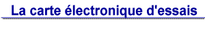

En fait, le module de reconnaissance vocale VoiceDirect, fabriqué par SENSORY (http://www.sensoryinc.com), n'est pas une nouveauté. Ce qui l'est, c'est ce kit de développement qui constitue un outil destiné à intégrer une réelle capacité de reconnaissance vocale à vos propres réalisations. Son originalité, la possibilité de le programmer en langage C (Voice Extreme -C).
Composition du kit:
Plaquette d'expérimentations avec microphone et haut-parleur inclus.Module de reconnaissance vocale Voice Extreme
Alimentation secteur.
Câble de liaison série RS232
Manuel
CD-ROM (soft: Voice Extreme IDE - Quick Synthésis - Exemples - Documentation )
Un PC tournant sous Windows 95/98/ME/NT/2000 , 16Mo de RAM, 15Mo sur Disque dur et une liaison RS232 sont nécessaires et suffisants pour lancer l'environnement logiciel.
Heureusement une version de Voice Extreme IDE et Quick Synthésis fonctionnant sous Windows XP est désormais disponible sur http://www.sensoryinc.com rubrique Download.

Le coeur du kit est bien entendu le module Voice Extreme (photo ci-dessous) qui comporte un processeur, une ROM contenant le progiciel et une mémoire FLASH de 2Mo dans laquelle prendront place vos programmes. Ainsi le module pourra être retiré et implanté sur votre application à l'aide du connecteur 34 points. La plaquette d'expérimentation comporte une zone pastillée destinée à recevoir l'électronique de l'utilisateur. Si cette solution ne vous convient pas, un connecteur sur lequel est disponible l'ensemble des lignes dE/S et les lignes d'alimentation. Vous disposez d'une liaison série RS232 (connexion au PC), d'entrées micro et haut-parleur externes, de trois LED et de cinq boutons poussoirs.
Le module Voice Extreme met à la disposition de l'utilisateur une unité centrale, un convertisseur analogique/numérique (processeur de traitement du signal), un générateur de tonalité DTMF, un synthétiseur vocal, un convertisseur numérique/analogique et un amplificateur de puissance MLI (Modulation en Largeur d'Impulsion ou PWM), des lignes d'E/S numériques programmables en entrée ou en sortie. La consommation est relativement faible, de l'ordre de 10 mA. Compte tenu de ses caractéristiques, ce module à toute sa place sur ce site consacré au micro-contrôleurs, d'autant qu'il pourra commander sans difficulté des composants externes et qu'il possède une réelle capacité de communiquer avec son environnement comme le font les micro-contrôleurs.
Lignes E/S
Vous disposez pour programmer le module en langage C (Voice Extreme C) d'un Environnement de Développement Intégré (IDE). Cette environnement facilite la programmation structuré et claire à l'aide du surlignage et de la couleur mettant en évidence les primitives et les variables. Le Kit logiciel comprend l'IDE, un compilateur C (proche de l'ANSI-C), un éditeur de liens (le linker),un programme de transfert, des exemples et des fichiers d'aide ainsi qu'un programme Quick Synthésis qui permet de convertir des fichiers de type .WAV dans le format reconnu par le module.
Vous pouvez pour vous familiariser rapidement avec le module, essayer et décortiquer les nombreux programmes fournis.
- Écrire et compiler votre programme à l'aide de l'IDE
- Télécharger le programme dans la mémoire FLASH du module via la RS232.
- Exécuter le programme et éventuellement implanter le module dans votre application.
Les débutants en langage C n'auront aucune difficulté pour écrire leur premier programme, il suffit de connaître les rudiments de langage C en vous aidant de l'abondante documentation traitant des fonctions C de reconnaissance vocale.
Plusieurs fournisseurs existent en France, dont SELECTRONIC ref: 22.7888 (http://www.selectronic.fr) ou LEXTRONIC Ref: KDVE364 (http://www.lextronic.fr) .